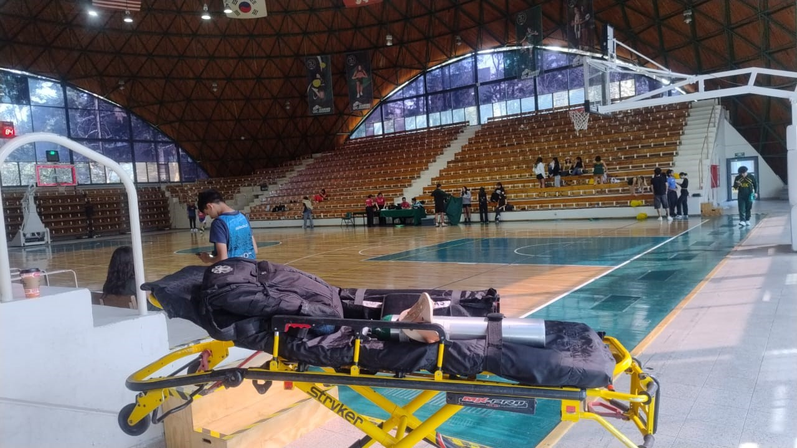
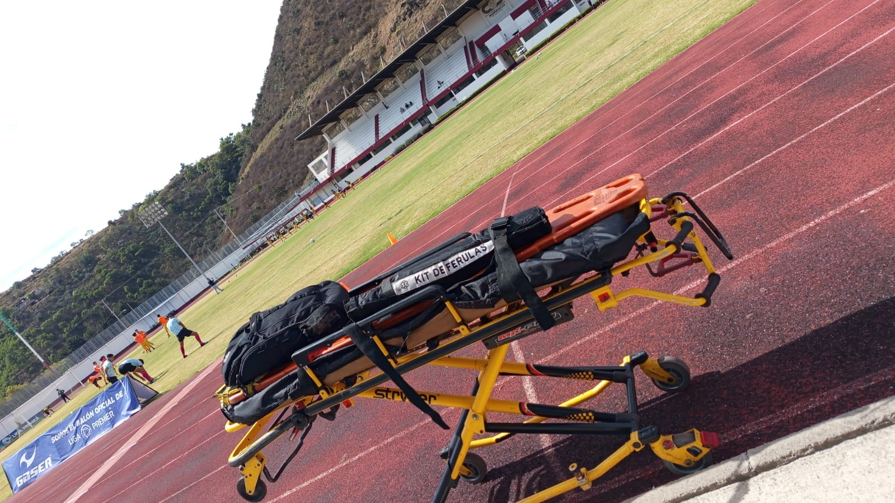
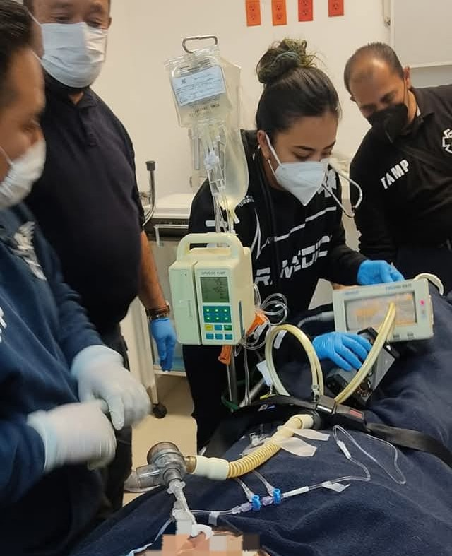

Ambulancias privadas en CDMX y Estado de México.
Servicio disponible las 24 horas los 365 días del año.
Ambulancias disponibles las 24 horas, los 365 días del año, brindando servicio en CDMX y Estado de México. Contamos con personal altamente capacitado, técnicos en urgencias médicas y paramédicos listos para responder de manera rápida, profesional y humana ante cualquier situación médica.
Somos una empresa dedicada a la atención prehospitalaria, manteniendo como prioridad salvaguardar la integridad y salud de nuestros clientes y sus seres queridos. Brindamos intervención rápida ante cualquier situación médica, ofreciendo tranquilidad, confianza, humanidad, confort, profesionalismo y asesoría médica profesional.


